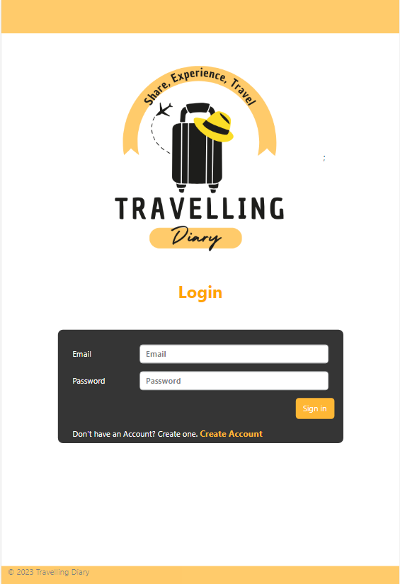

The purpose of this application is to allow users to log and share
their experiences from their travels.
As well as to allow clients to login and manage the content of the posts.
This application is made for people looking for travel tips and new expierences.
This application was built with MERN stack.
The purpose of this application is to provide a platform for users
to find information about a restaurant such as food reviews from
other users, cuisine, address, etc.. Users will be able to find restaurants
based on the ratings given to them from other users.
It lets the user create a favourites list which they can add any restaurant
they like to their list. It is an application that is made for foodies.
This application was built with Python and the Flask framework.
This is a quote game application. The home page displays a
random quote upon loading. You can search for a quote by a
famous person on the homepage.
On the Game Page of the application, a random quote is displayed
with a missing word. You are to enter in the missing word.
You can also, generate a new quote by clicking on the
"Generate new quote" button. This is still a work in progress.
Haven't finished the styling of the application.
The purpose of building this application was to familiarise myself with React concepts.
This is a roulette game application made for the terminal.
It was made using the Python programming language and was the first
programming assignment from Coder Academy. This application simulates the
game of Roulette. It has a main menu with three options, play game, view results,
or exit the application. The game has features like, place bets on multiple
numbers, calculating amount won or lost, and seeing remaining funds. This
was a fun application to build as their was some complicated logic involved with it.